Dashboards analíticos
Indicadores de SLA, qualidade, produtividade, tempo, carteira, treinamento e operação.
- Looker Studio
- KPIs
- Visão gerencial
Python · SQL · Looker Studio · JavaScript · Apps Script
Analista de Dados
Crio dashboards, automações e aplicações internas para transformar rotina operacional em visão de gestão. Meu trabalho conecta análise de dados, regras de negócio, visualização e sistemas práticos para acompanhamento diário.
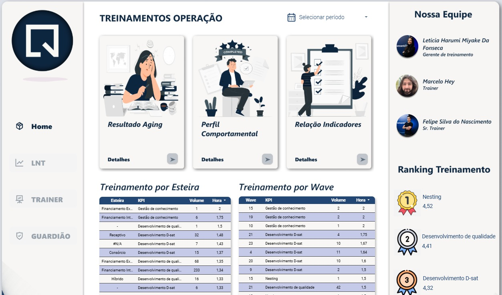
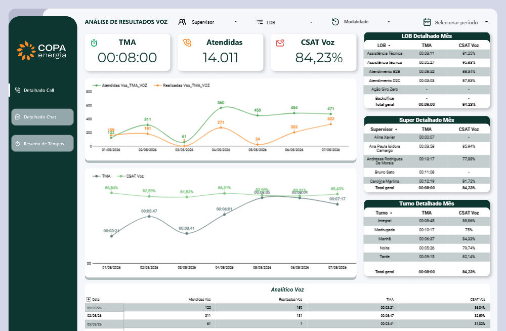
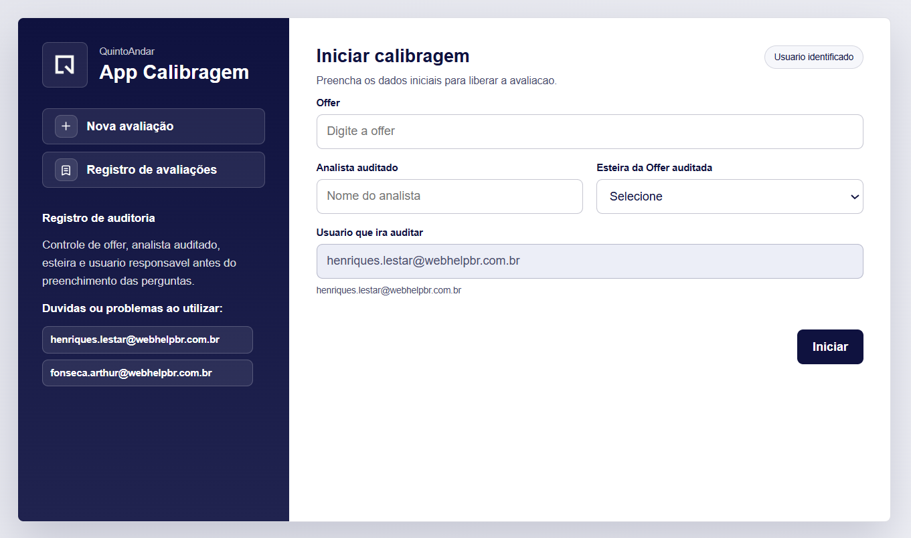
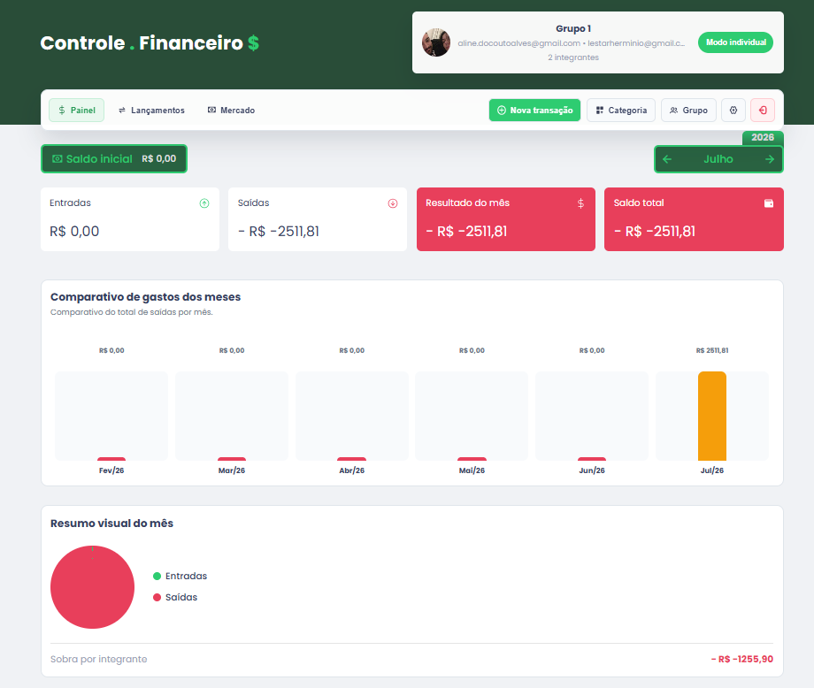
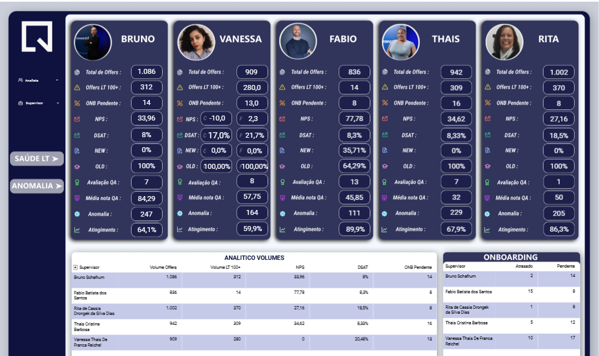
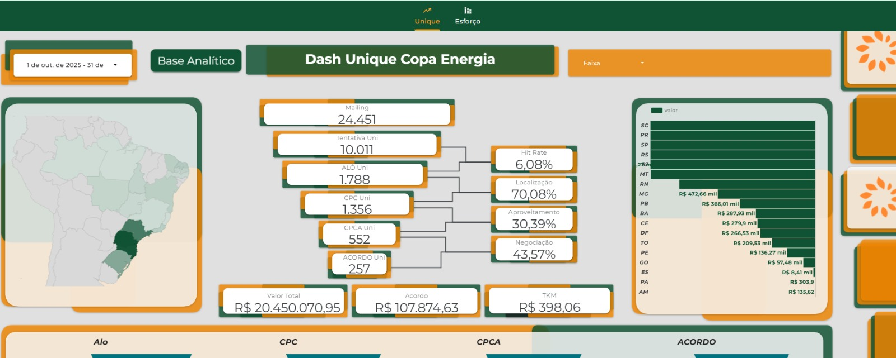
Especialidades
O foco é construir soluções úteis para quem acompanha resultado todos os dias: painéis de performance, automações, apps internos e camadas de análise que reduzem trabalho manual.
Indicadores de SLA, qualidade, produtividade, tempo, carteira, treinamento e operação.
Ferramentas para distribuir casos, validar regras, reduzir etapas repetitivas e dar escala ao processo.
Interfaces web para registrar avaliações, controlar dados, organizar fluxos e apoiar tomada de decisão.
Organização de dados para alimentar visões por período, analista, supervisor, carteira, esteira e cliente.
Galeria
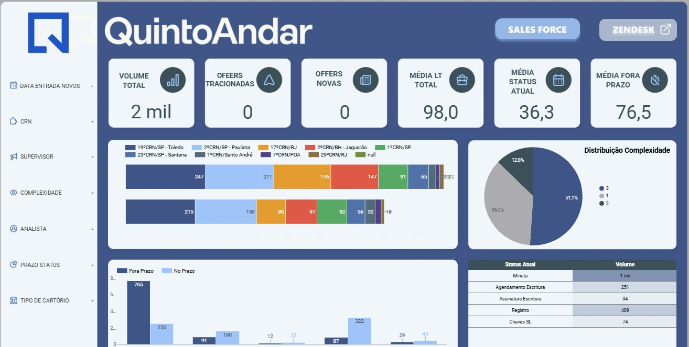
Projetos selecionados
Os cinco primeiros cards destacam os projetos prioritários. A lista completa reúne os dashboards das contas atendidas, além das automações e aplicações internas fora do Looker Studio.
QuintoAndar · Treinamento
Registro concentrado e ranqueado da equipe de treinamento, com visão individual e composta dos analistas novos, treinamentos aplicados, atuação dos guardiões, notas e apontamentos para mapear rendimento e pontos de melhoria.
QuintoAndar · Operação
Acompanhamento de SLA, KPIs de qualidade e indicadores de conformidade por analista. O painel consolida dados de cada caso, carteira, quartis, FUP, pagamento e Salesforce para controle total da operação.
QuintoAndar · Lead Time
Dashboard focado no estudo de Lead Time, com distribuição e abertura por períodos dentro das ferramentas Zendesk e Salesforce para acompanhar gargalos e evolução dos tempos.
Copa Energia · Tempos
Painel de acompanhamento de TMA, atendidas e CSAT Voz, com recortes por LOB, supervisor, turno, modalidade e período. A leitura combina visão macro e tabelas detalhadas para investigação operacional.
Python · Automação
Ferramenta local em Python para automatizar a distribuição de casos entre analistas. Reduz tempo de execução, valida erros e propriedades importantes, e foi projetada para escalar novas funcionalidades conforme o processo evolui.
JavaScript · Apps Script
Portal centralizado para acesso aos dashboards corporativos, indicadores e ferramentas de análise por cliente. Organiza navegação, identidade visual, links externos e experiência de consulta em um único ambiente.
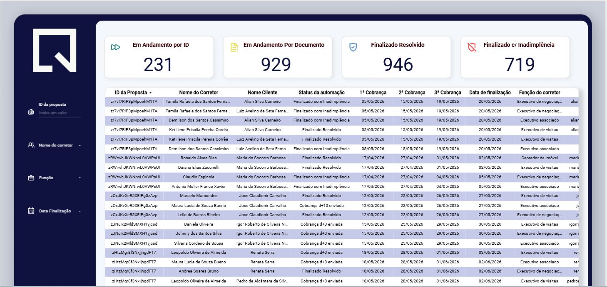
QuintoAndar · Ecossistema
Página de conta com os painéis de SLA, KPIs, qualidade, financiamento, elegibilidade, documento fiscal e acompanhamento operacional, criada para guiar resultado, confiança no processo e transparência das leituras.
QuintoAndar · Gerencial
Acompanhamento de SLA, KPIs de qualidade e indicadores de conformidade por time, com gráficos detalhados para leituras de longa duração e visão gerencial.
QuintoAndar · Financiamento
Painel consolidado da esteira de Financiamento Interno, com foco em desempenho, atingimento de supervisores, qualidade, KPIs, volumes de casos e cenários individuais e coletivos.
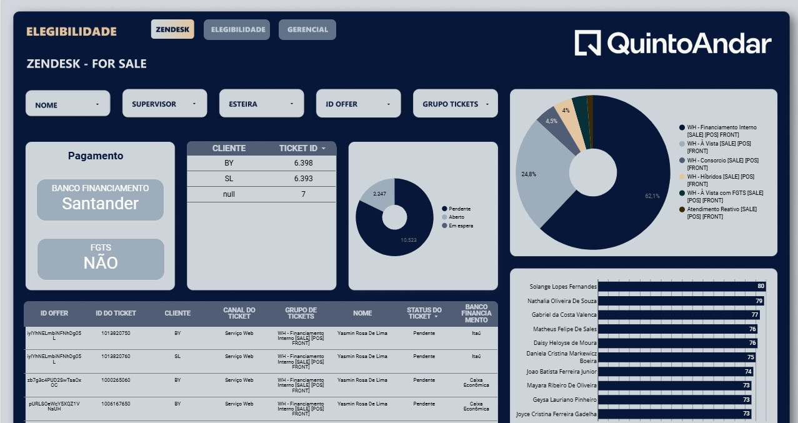
QuintoAndar · Distribuição
Acompanhamento de distribuição de casos por analista, time e gerencial, com foco em validar equilíbrio e visão em tempo real da carteira de cada esteira e analista.
QuintoAndar · Qualidade
Detalhamento das monitorias e apontamentos do time de qualidade, com abertura por blocos, feedbacks, notas e datas para análise individual, por esteira e por supervisores.
QuintoAndar · Documento Fiscal
Painel detalhado do estado atual do caso, com foco na comunicação entre parceiros e corretores para emissões de notas fiscais.
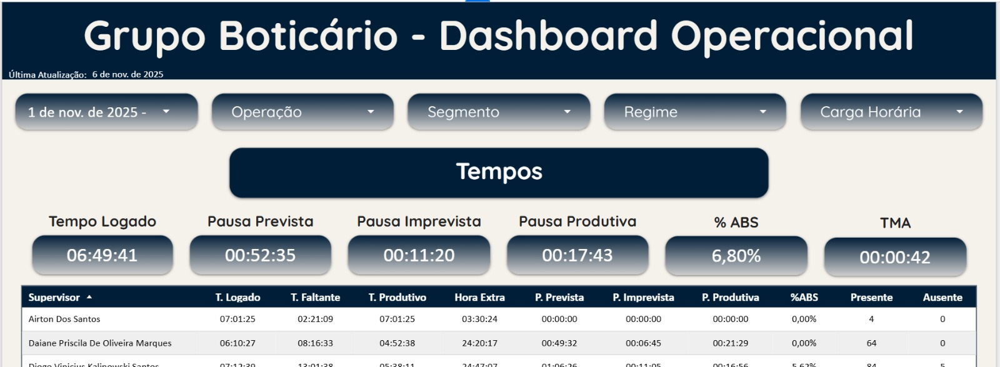
Boticário · Operação
Acompanhamento de resultados consolidados, com métricas por equipe, tipo de atendimento e período. Visão gerencial para leitura contínua de performance.
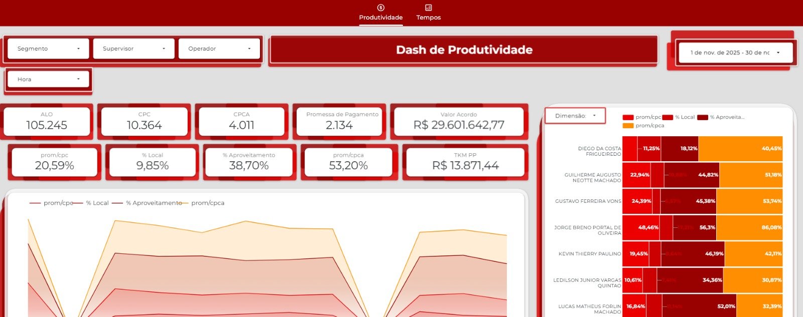
Santander · Gerencial
Monitoramento dos principais indicadores de desempenho da operação, com filtros dinâmicos por data, segmento, supervisor e operador.
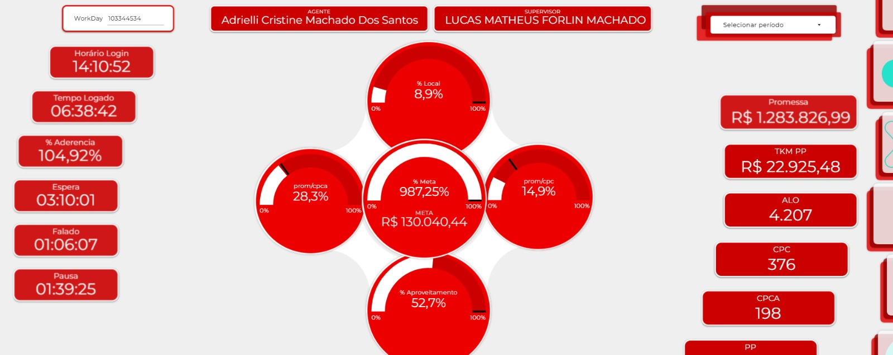
Santander · Operação
Painel individual de performance que consolida resultados e atingimento de metas de cada colaborador, com filtros por data e tipo de retenção.
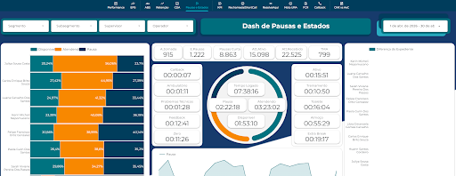
Zurich · Gerencial
Painel gerencial para monitorar os principais indicadores de desempenho da operação, com filtros dinâmicos por data, segmento, supervisor e operador.
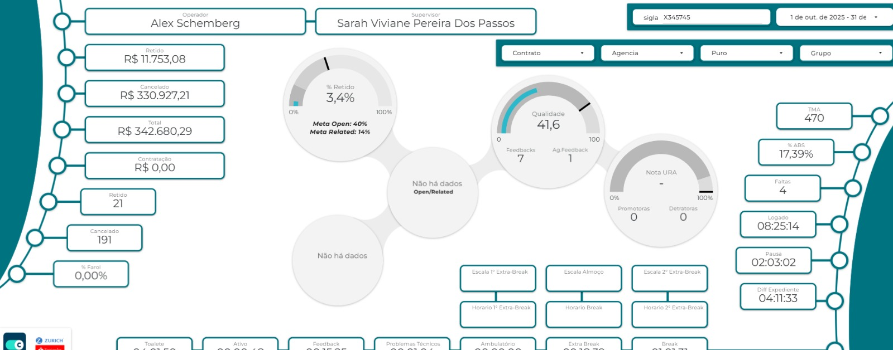
Zurich · Individual
Painel individual de performance que consolida resultados e atingimento de metas por colaborador, permitindo filtros por data e tipo de retenção.
Copa Energia · Resultados
Acompanhamento de resultados por períodos, com separação de unique e esforço. A arquitetura traz gráficos robustos e camadas para leitura detalhada da gerência de Collection.
QuintoAndar · App interno
Aplicativo para iniciar calibrações, registrar avaliações e organizar dados como offer, analista auditado, esteira e usuário auditor. A interface apoia rastreabilidade antes do preenchimento das perguntas.
JavaScript · App Web
Aplicativo para controle de entradas, saídas, lançamentos, categorias e grupos. Consolida saldo, resultado mensal, comparativo de gastos e resumo visual do mês.
Processo de trabalho
Cada entrega nasce de uma dor prática: entender a regra, estruturar a base, montar a visualização e transformar o resultado em rotina de acompanhamento.
Entendimento de operação, meta, responsáveis, periodicidade, fonte de dados e decisão esperada.
Tratamento, consulta SQL, validação dos indicadores e padronização das regras de negócio.
Uso de Python, JavaScript ou Apps Script quando a rotina precisa de escala, registro ou interface.
Construção de painéis com filtros, hierarquias e leitura clara para operação e gestão.
Contato
Me contate nas seguintes plataformas!